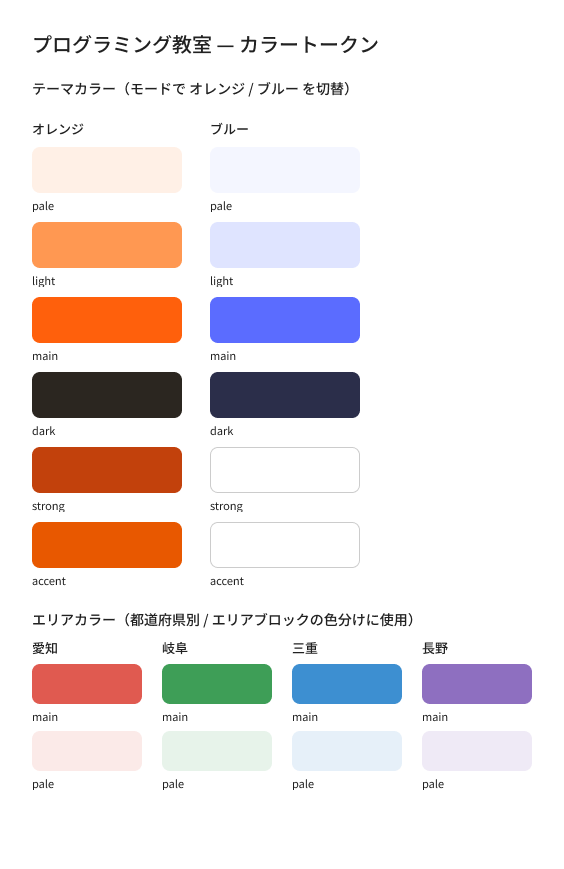
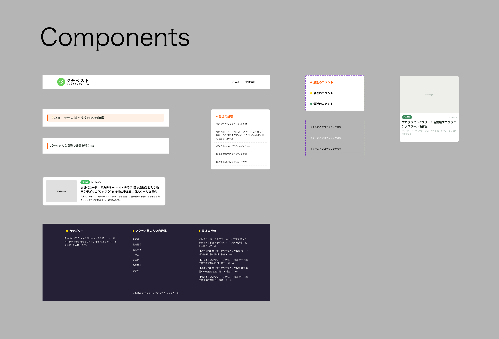
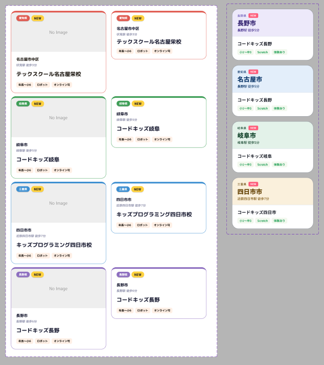

同一案件を通じて、次の4領域を実践しています。
「写真がない」制約への対応として、画像なしのカード案を含む複数パターンをFigmaで検討しました。
関係者との議論を経て、教室写真がない場合は汎用画像を採用する方針に着地しました。画像なし案（プレフェクチャカラーブロック型）自体は見送りとなりましたが、制約に対して複数の可能性を出し、議論の土台をつくったことが合意形成につながっています。
ブランドカラー #FF6600 をベースに設計しました。ただし白文字と組み合わせるとコントラスト比が約2.9:1となり、AA基準（4.5:1）に届きません。そこで、ボタンなど文字と重なる要素には、より濃い strong トークン #B35000（白文字とのコントラスト比 約5.2:1）を用意して使い分けています。
「ブランドカラーをそのまま使えない」場面を、感覚ではなくコントラスト比の数値で判断し、base と strong の2トークンに分けて解決しました。白文字 × #B35000 は約5.2:1でAA準拠。

教室カードを、4県（愛知・岐阜・三重・長野）× 画像あり／なしのバリアント構造で設計しました。1つのコンポーネントで組み合わせを管理し、Auto Layout で余白やサイズの一貫性を保っています。
Auto Layout では、子要素のサイズ設定（Fill / Hug / Fixed）の指定順序でレイアウトが崩れて詰まった経験がありました。親から子へ、サイズの依存関係を意識して設定する順序を理解したことで解決。ツールの挙動を「なぜそうなるか」で理解する習慣がつきました。


複数案（A / B / C）を「叩き台」として提示する進め方をとりました。
完成品ではなく議論の出発点として提示することで、フィードバックを引き出し、制約や優先順位を関係者と共有。議論を経て、写真がない場合は汎用画像を採用するという方針に着地しました。決定の背景を共有することで、その後の実装判断もぶれにくくなります。
現在も進行中のプロジェクトです。デザインシステムの整備と実装を並行して進めています。